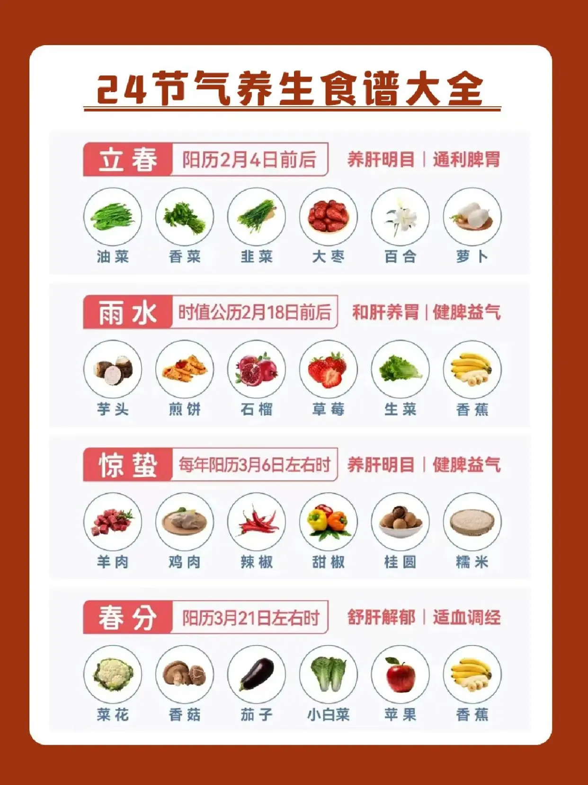
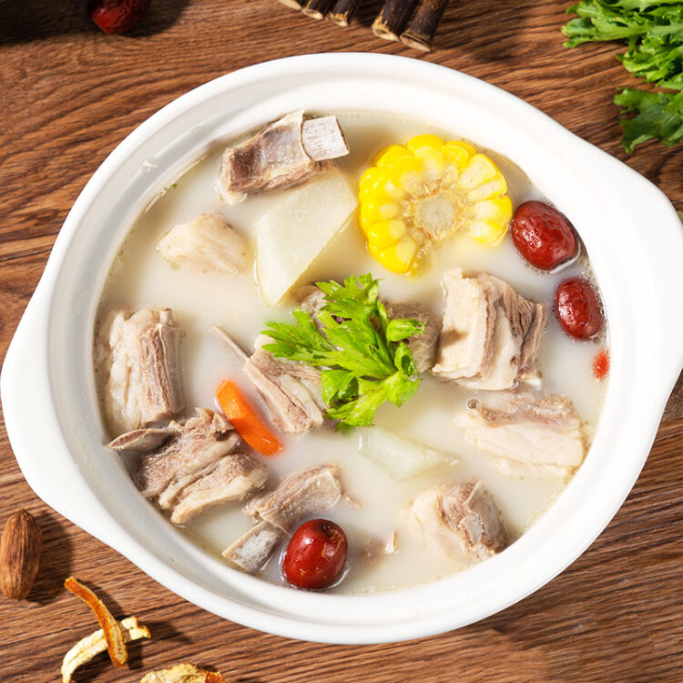
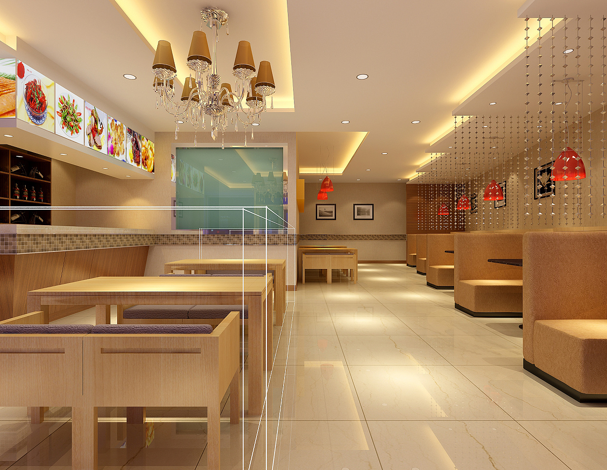
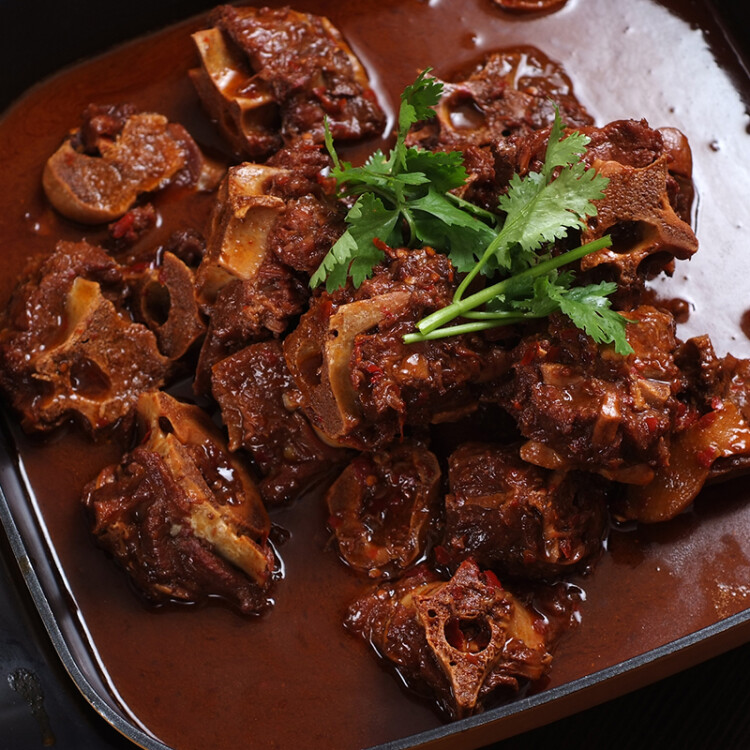

我的滩羊项目
除了日常的探索笔记，我还会围绕滩羊做一些"项目式"的探索。这些项目通常需要更多的时间、更系统的规划，也往往能带来更深的洞察。下面是正在进行的和计划中的项目。
进行中

滩羊24节气食谱
中国传统饮食讲究"不时不食"，我尝试根据24节气，为滩羊设计不同的烹饪方式。春天清炖，夏天凉拌，秋天红烧，冬天煲汤。每个节气发布一道应季的滩羊菜谱，并记录烹饪心得和背后的饮食文化思考。
已完成6/24个节气
最新进展（2024.03.20）
刚刚完成了"春分"的食谱：清炖羊肉。尝试了三次，终于找到了白萝卜和滩羊的完美平衡。
进行中

滩羊风味地图
用地图的形式，标记我品尝过的滩羊餐厅和菜品。包括位置、人均消费、推荐菜品、我的评分和简短评价。最终目标是做成一个互动地图，让来宁夏的游客可以按图索骥。
已收录12家餐厅
计划中

家庭滩羊食谱记录计划
采访我的家人、亲戚、朋友，记录他们家的"独门"滩羊做法。计划收录至少10个家庭的私房食谱，并制作成一本小册子。这不仅是食谱的收集，更是家族记忆的保存。
下一步计划
先从我的外婆开始，记录她的红焖羊肉。
计划中

滩羊主题文创设计
设计一系列滩羊主题的文创产品：手机壁纸、表情包、明信片、帆布袋等。不求商业化，只是出于兴趣，也想探索"地域风物"的视觉化表达可能。
构思中
正在学习Illustrator，计划先设计一套简单的滩羊主题手机壁纸。
项目时间线
2023.10
项目启动
决定开始"我的滩羊手记"项目，建立博客框架，写下第一篇探索笔记。
2023.12
风味地图启动
开始系统性地记录和评价吃过的滩羊餐厅，建立风味地图数据库。
2024.01
24节气食谱启动
在冬至发布了第一个节气食谱，正式启动24节气食谱项目。
2024.03
完成春季节气
完成了立春、雨水、惊蛰、春分四个节气的滩羊食谱。
2024.06
计划：家庭食谱启动
计划在暑假期间，开始家庭食谱的收集工作。
2024.10
项目一周年
"我的滩羊手记"项目一周年，计划发布一份年度总结报告。
寻找合作者
如果你对某个项目感兴趣，或者有相关的技能和经验，欢迎联系我，一起让这些想法变成现实！
我正在寻找：
- 熟悉宁夏本地餐饮的"地头蛇"
- 擅长手绘或平面设计的朋友
- 对饮食文化、地方风物有研究的朋友
- 单纯对这个项目感兴趣，想参与进来的任何人